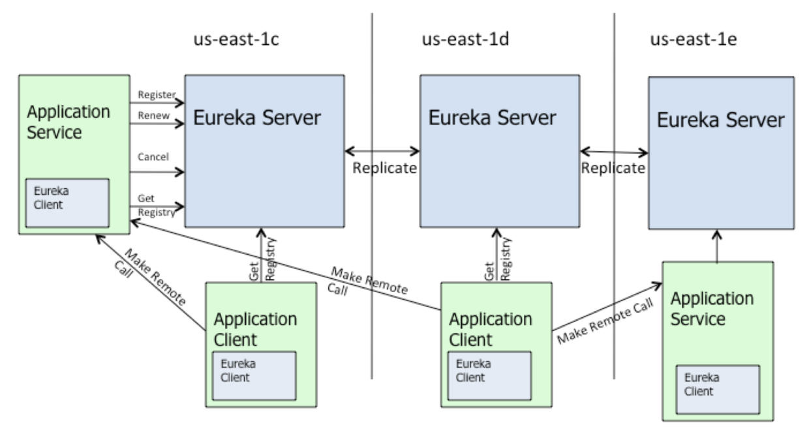
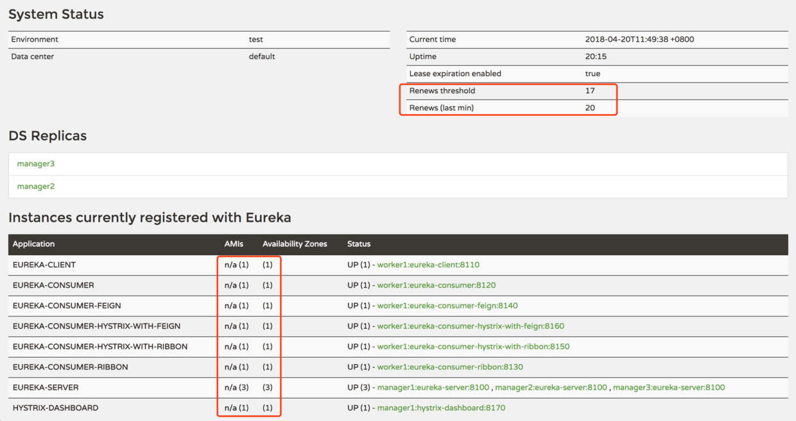

Eureka 是 Netflix 开发的服务发现框架，本身是一个基于 REST 的服务，主要用于定位运行在 AWS 域中的中间层服务，以达到负载均衡和中间层服务故障转移的目的。SpringCloud 将它集成在其子项目 spring-cloud-netflix 中，以实现 SpringCloud 的服务发现功能。
Eureka 包含两个部分，EurekaServer 和 EurekaClient。
EurekaServer 是注册中心，负责微服务的发现功能，各个 EurekaClient 启动后也会注册到配置的 EurekaServer 中，Eureka Server 通过 Register、Get、Renew 等接口提供服务的注册、发现和心跳检测等服务，各个 EurekaServer 也是一个服务，可以在集群版中注册到其他的 EurekaServer 中，保证高可用。EurekaClient 是各个 java 微服务应用，在应用启动后向 EurekaServer 注册，并周期性的向 Eureka Server 发送心跳，默认周期为 30 秒，如果 Eureka Server 在多个心跳周期内没有接收到某个节点的心跳，Eureka Server 将会从服务注册表中把这个服务节点移除，默认 90 秒，服务提供方和服务消费方统一都属于 EurekaClient。
- Register(服务注册)：把自己的 IP 和端口注册给 EurekaServer。
- Renew(服务续约)：发送心跳包，每 30 秒发送一次。告诉 EurekaServer 自己还活着。
- Cancel(服务下线)：当 provider 关闭时会向 EurekaServer 发送消息，把自己从服务列表中删除。防止 consumer 调用到不存在的服务。
- Get Registry(获取服务注册列表)：获取其他服务列表。
- Replicate(集群中数据同步)：eurekaServer 集群中的数据复制与同步。
- Make Remote Call(远程调用)：完成服务的远程调用。
1）首先在 pom.xml 文件引入需要用到的依赖包，如下：
<?xml version="1.0" encoding="UTF-8"?>
<project xmlns="http://maven.apache.org/POM/4.0.0" xmlns:xsi="http://www.w3.org/2001/XMLSchema-instance"
xsi:schemaLocation="http://maven.apache.org/POM/4.0.0 http://maven.apache.org/xsd/maven-4.0.0.xsd">
<modelVersion>4.0.0</modelVersion>
<parent>
<groupId>org.springframework.boot</groupId>
<artifactId>spring-boot-starter-parent</artifactId>
<version>1.5.16.RELEASE</version>
</parent>
<groupId>com.aizen</groupId>
<artifactId>springcloud-eureka-test</artifactId>
<version>1.0-SNAPSHOT</version>
<name>springcloud-eureka-test</name>
<properties>
<project.build.sourceEncoding>UTF-8</project.build.sourceEncoding>
<maven.compiler.source>1.8</maven.compiler.source>
<maven.compiler.target>1.8</maven.compiler.target>
</properties>
<dependencyManagement>
<dependencies>
<dependency>
<groupId>org.springframework.cloud</groupId>
<artifactId>spring-cloud-dependencies</artifactId>
<version>Edgware.SR4</version>
<type>pom</type>
<scope>import</scope>
</dependency>
</dependencies>
</dependencyManagement>
<dependencies>
<dependency>
<groupId>org.springframework.boot</groupId>
<artifactId>spring-boot-starter</artifactId>
</dependency>
<dependency>
<groupId>org.springframework.boot</groupId>
<artifactId>spring-boot-starter-test</artifactId>
<scope>test</scope>
</dependency>
<!-- spring cloud Eureka Server 启动器，健康检查及安全认证会用到 -->
<dependency>
<groupId>org.springframework.cloud</groupId>
<artifactId>spring-cloud-starter-eureka-server</artifactId>
</dependency>
<!-- spring 监控组件 -->
<dependency>
<groupId>org.springframework.boot</groupId>
<artifactId>spring-boot-actuator</artifactId>
</dependency>
</dependencies>
<build>
<plugins>
<plugin>
<groupId>org.springframework.boot</groupId>
<artifactId>spring-boot-maven-plugin</artifactId>
</plugin>
</plugins>
<resources>
<resource>
<filtering>true</filtering>
<directory>src/main/resources</directory>
</resource>
</resources>
</build>
</project>2）然后在 application.yml 文件中配置完成基本功能常用的基本项：
server:
port: 8080
spring:
application:
name: eureka-server
eureka:
instance:
# 获取当前节点的ip地址
hostname: ${spring.cloud.client.ipAddress}
# 表示eureka server至上一次收到client的心跳之后，等待下一次心跳的超时时间，在这个时间内若没收到下一次心跳，则将移除该instance
lease-expiration-duration-in-seconds: 90
# 表示eureka client发送心跳给server端的频率
lease-renewal-interval-in-seconds: 30
prefer-ip-address: true
instance-id: ${spring.cloud.client.ipAddress}:${server.port}
server:
# 服务保护模式（自我保护模式）：一般情况下，微服务在Eureka上注册后，会每30秒发送心跳包，Eureka通过心跳来判断服务时候健康，
# 同时会定期删除超过90秒没有发送心跳服务。
# 导致Eureka Server接收不到心跳包的可能：一是微服务自身的原因，二是微服务与Eureka之间的网络故障。
# 通常微服务的自身的故障只会导致个别服务出现故障，一般不会出现大面积故障，而网络故障通常会导致Eureka Server在短时间内无法收到大批心跳。
# 虑到这个区别，Eureka设置了一个阀值，当判断挂掉的服务的数量超过阀值时，Eureka Server认为很大程度上出现了网络故障，将不再删除心跳过期的服务。
# Eureka Server在运行期间，会统计心跳失败的比例在15分钟内是否低于85%，如果低于85%，Eureka Server则任务是网络故障，不会删除心跳过期服务。
# 这种服务保护算法叫做Eureka Server的服务保护模式。
# 这种不删除的，90秒没有心跳的服务，称为无效服务，但是还是保存在服务列表中。如果Consumer到注册中心发现服务，
# 则Eureka Server会将所有好的数据（有效服务数据）和坏的数据（无效服务数据）都返回给Consumer。
enable-self-preservation: false
# eureka server清理无效节点的时间间隔，默认60000毫秒，即60秒
eviction-interval-timer-in-ms: 60000
client:
# 是否将自己作为微服务注册到 Eureka-Serve r中，默认的为true
register-with-eureka: false
# 是否从 Eureka-Server 中获取服务注册信息，默认为true，单机版设置为 false，集群版设置为 true，多个 Eureka-Server 互相同步数据
fetch-registry: false
# 设置服务注册中心地址，查询服务和注册服务都需要依赖这个地址
service-url:
default-zone: http://${eureka.instance.instance-id}/eureka/
# 从eureka服务器注册表中获取注册信息的时间间隔，对于api-gateway，如果要迅速获取服务注册状态，可以缩小该值，比如5秒
registry-fetch-interval-seconds: 30
# 开启健康检查（依赖spring-boot-starter-actuator）
healthcheck:
enabled: trueEurekaClient 的详细配置 可以在查看以下文件：~/.m2/repository/org/springframework/cloud/spring-cloud-netflix-eureka-client/1.2.3.RELEASE/spring-cloud-netflix-eureka-client-1.2.3.RELEASE.jar!/META-INF/spring-configuration-metadata.jsonEurekaServer 的详细配置 可以在查看以下文件：~/.m2/repository/org/springframework/cloud/spring-cloud-netflix-eureka-server/1.2.3.RELEASE/spring-cloud-netflix-eureka-server-1.2.3.RELEASE.jar!/META-INF/spring-configuration-metadata.json3）最后启动类配置：
@EnableEurekaServer
@SpringBootApplication(scanBasePackages = {"com.test"})
public class EurekaTestApplication {
public static void main(String[] args){
SpringApplication.run(EurekaTestApplication.class, args);
}
}启动程序，访问 http://localhost:8080 即可查看 eurekaServer 基本信息。
Eureka 作为微服务的注册中心，在微服务生态中是极其重要的角色，单机版的 eureka 并不能保证注册中心的高可用性，所以在商用时一般都配置集群版的 Eureka 集群。
集群版的 pom 依赖和启动类同单机版；
application.yml 配置文件中有一点不同，设置注册中心时，将本节点注册到其他所有的集群节点中：
eureka:
client:
# 设置服务注册中心地址，配置多个 eurekaServer 的 host
service-url:
default-zone: http://192.168.0.2/eureka/,http://192.168.0.3/eureka/EurekaServer 的每个节点都是平等的，每个节点都向外提供服务发现和注册功能，可以作为微服务注册到其他 EurekaServer 节点并发现其他节点中已注册的服务。因此很多程序员会将不同的微服务注册到不同的 EurekaServer 节点，然后通过 EurekaServer 节点之间相互注册通讯来发现全部的微服务，这种方法是极不推荐的，因为 EurekaServer 在服务管理上，会根据连带责任来维护注册的服务列表，如果某台 EurekaServer 节点宕机，则该节点中注册的所有微服务都会被删除，因此，推荐 EurekaClient 配置注册中心时配置 EurekaServer 中所有节点。
默认情况下，微服务会定时（默认30秒，可自行配置）向 EurekaServer 发送心跳，如果一定时间内（默认90秒，可自行配置）EurekaServer 没有收到某个微服务的心跳，则会从微服务列表中剔除该微服务，这是正常的微服务治理机制。
但在微服务本身健康情况下，可能会由于网络原因无法与 EurekaServer 通信，此时不应该错误的剔除掉该微服务，Eureka 为了解决该问题提出 自我保护模式：
Eureka Server 在运行期间会去统计节点心跳失败比例在 15 分钟之内是否低于 85%，如果低于 85%，Eureka Server 会认为发生了网络故障，不会从列表中删除这些心跳过期的服务，这些服务称为无效服务。此时如果 Consumer 从注册中心发现服务，注册中心会将有效服务和无效服务一起返回，Consumer 调用了无效服务就会失败，这里需要 Consumer 使用熔断器来提供容错处理以提升系统稳定性和用户体验。
在 1 分钟后 Renews (last min) < Renews threshold。
Renews : Eureka Server 期望每分钟收到客户端实例续约的总数。计算公式如下：
当前服务节点数 * (60s/心跳间隔) * 0.85 #默认心跳间隔30s，默认心跳失败比例 0.85，都可通过配置文件更改
Renews threshold：Eureka Server 最后 1 分钟实际收到客户端实例续约的总数。
这两个参数可以在 Eureka 信息页面看到：

在上图中，Status 栏显示着 UP，表示应用程序状态正常。其它取值 DOWN、OUT_OF_SERVICE、UNKNOWN 等，只有 UP 的微服务会被请求。
由于 EurekaServer 与 EurekaClient 通过心跳机制来判断应用程序状态，因此只要两者之间的心跳保持正常，应用程序状态就会一直保持 UP 状态，所以 Status 值并不能完全反应应用的实际健康状态。
我们可以使用 Spring Boot Actuator 的健康检查机制来完成应用程序的健康检查，并将节点的健康状态传播给 EurekaServer，配置文件如下：
eureka:
client:
# 开启健康检查（依赖spring-boot-starter-actuator）
healthcheck:
enabled: true如果需要更细粒度健康检查，可实现 com.netflix.appinfo.HealthCheckHandler 接口，EurekaHealthCheckHandler 已实现了该接口。
优点：
- 保留无效服务可以防止误删除健康服务，待网络故障消除，EurekaServer 会自动退出自我保护模式；
- EurekaClient 具有缓存服务列表功能，即使 EurekaServer 出现网络故障，Consumer 和 Provider 之间也可以正常通信，只有所有的 Provider 都不可用时，Consumer 才会从注册中心重新发现服务列表；
- 微服务的负载均衡策略会自动剔除死亡的微服务节点（Robbin）。
缺点：
- 当无效服务中包括不健康 Provider 节点时，Consumer 发现服务列表后，请求 Provoder 会调用失败，此时需要额外使用熔断器来加强容错。
单机版可关闭自我保护：
eureka:
server:
enable-self-preservation: falseEurekaClient 在配置注册中心时，建议把所有的 EurekaServer 集群所有节点都配置上。 实际上，只配置一个 Eureka Server 节点其实就可以了，但是，Eureka Server 对服务的管理有连带责任。如果只配置一个Eureka Server 节点，那么会导致连带删除的风险，导致服务不可靠。如果配置了多个 Eureka Server 节点，EurekaClient 在注册服务时会根据注册中心列表顺序注册，不会将当前的服务同时注册到所有 Eureka Server 节点上，从第一个配置的 Eureka Server节 点开始注册，如果注册成功，后续的 Eureka Server 节点不再重复注册，每30秒，Eureka Client 发送一个心跳到 Eureka Server 上，如果心跳没有反馈，则从已配置的 Eureka Server 节点列表的下一个服务节点继续注册。这样做可以保证服务的可靠性，降低服务连带责任导致的服务不可靠。
当有多个 EurekaClient 需要注册时，建议 EurekaServer 的顺序异序排列，即微服务A注册中心服务顺序为 s1，s2，s3，微服务B推荐为 s2，s3，s1……这样可以充分发挥 EurekaServer 集群的特性，因为 Eureka Server 和 Eureka Client 对心跳的监测都是（3*间隔时间）的，所以会有服务列表数据的不同步可能。在CAP原则上，Eureka Server是保证AP原则，放弃C原则的。
1）基本的 application.yaml 配置：
spring:
application:
name: user-service
server:
port: 8080
# 配置Eureka Server的地址信息，如果是Eureka Server集群，多个节点使用逗号','分割。
eureka.client.serviceUrl.defaultZone=http://server1:8080/eureka/,http://server2:8080/eureka/2）启动类配置：
@EnableEurekaClient
@SpringBootApplication
public class UserServiceApplication {
public static void main(String[] args) {
SpringApplication.run(UserServiceApplication .class, args);
}
}CAP原则又称CAP定理，指的是在一个分布式系统中，Consistency（数据一致性）、 Availability（服务可用性）、Partition tolerance（分区容错性），三者不可兼得。
| 性质 | 描述 |
|---|---|
| 数据一致性 (Consistency) |
从客户端角度来说，客户端请求分布式集群中的任何节点获取到的数据都是最新的数据； 从服务端角度来说，服务端每次执行更新数据操作后都需要同步到集群中的其他节点。 |
| 服务可用性 (Availability) |
即服务一直可用，每一个客户端请求在合理时间内都能得到合理的服务端响应，而不会出现用户操作失败或者请求超时等用户体验不好的情况。 |
| 分区容错性 (Partition tolerance) |
分布式系统在网络分区或者节点故障的情况下，仍能正常向外提供一致性或者可用性服务，分布式系统外观看起来像是一个整体，集群内部虽然有节点故障，但是系统仍能满足用户使用需求，不会影响用户体验 |
由于三者不可兼得，所以放弃任何一个都会带来相应的影响：
| 分类 | 影响 |
|---|---|
| CA (放弃P) |
如果放弃P（不允许分区），那么数据可以保证一致性和可用性，但是单节点服务不具备系统扩展性，违背了分布式系统的设计初衷，所以分布式系统不可避免地都会使用P原则。 |
| CP (放弃A) |
如果放弃A（不保证服务可用性），每次当某台服务器数据更新后都要向集群中其他节点同步数据，只有所有节点同步完数据后，才会重新接受客户端请求，这个过程可能要耗时很长，就会造成一段时间内服务不可用，用户请求超时报错等问题，牺牲用户体验 |
| AP (放弃C) |
这里所说的放弃一致性，并不是完全放弃数据一致性，而是放弃数据的强一致性，而保留数据的最终一致性。一旦网络分区发生，各节点之间数据不能同步，为了保证高可用，服务器只能使用本地的缓存数据，造成全局的数据不一致性。典型的例子就是抢购场景，用户前几秒在页面看见还有货（优先保证服务可用性），下单时会提示已售罄（此时需要保证数据一致性），牺牲少许用户体验，但不会造成严重的网络阻塞 |
zookeeper 作为常用的注册中心，与 eureka 有很大的区别：